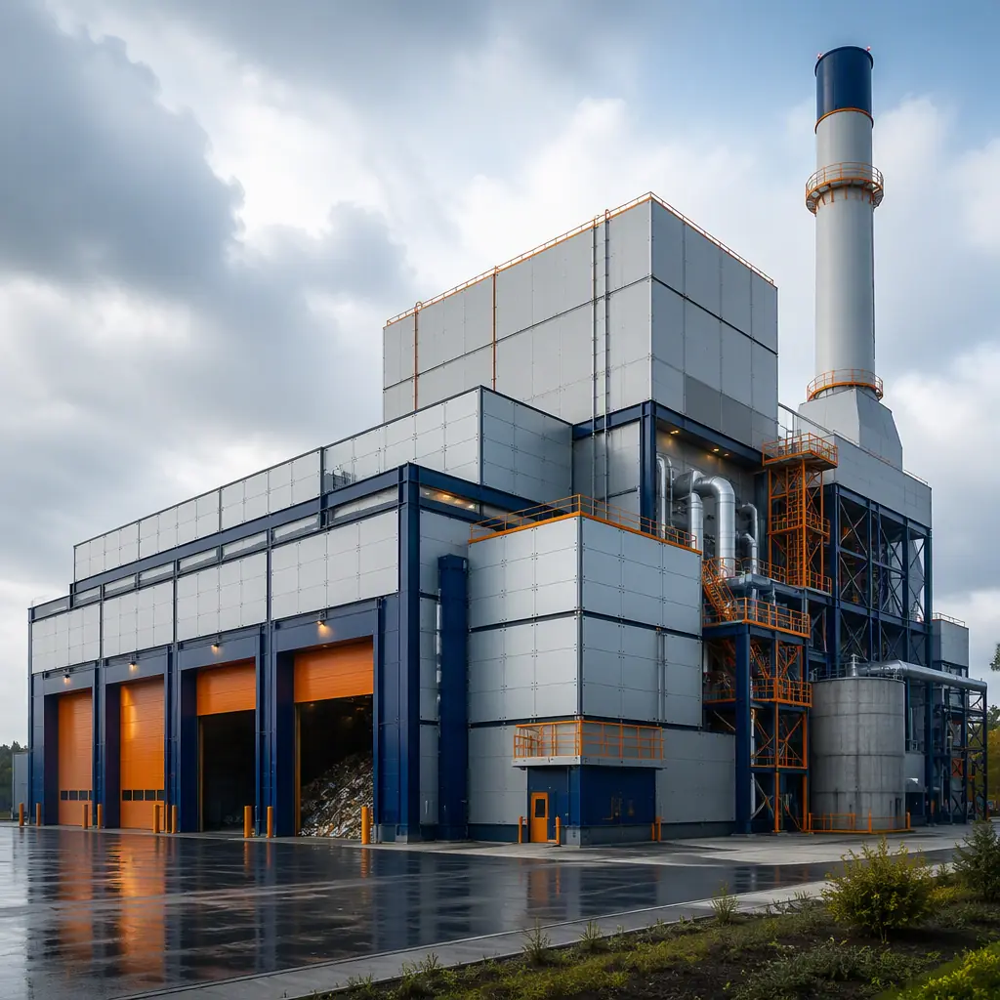
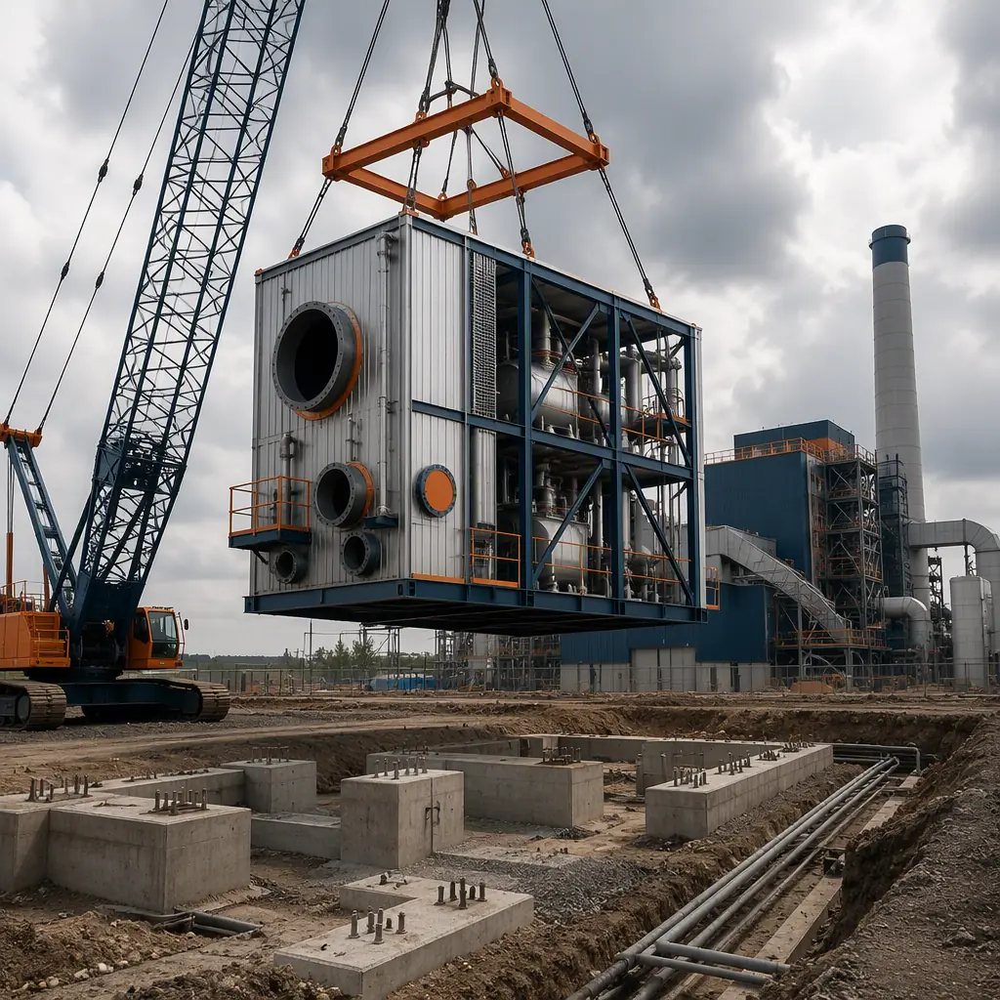
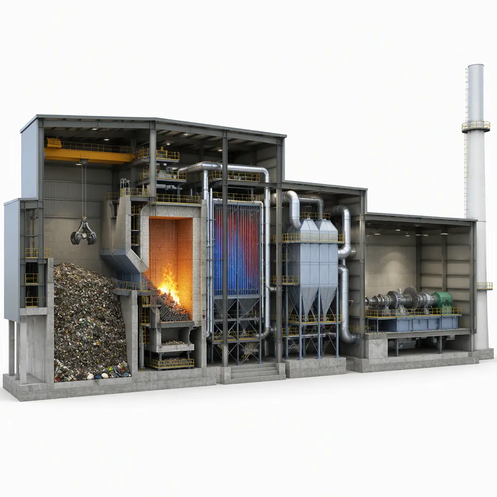
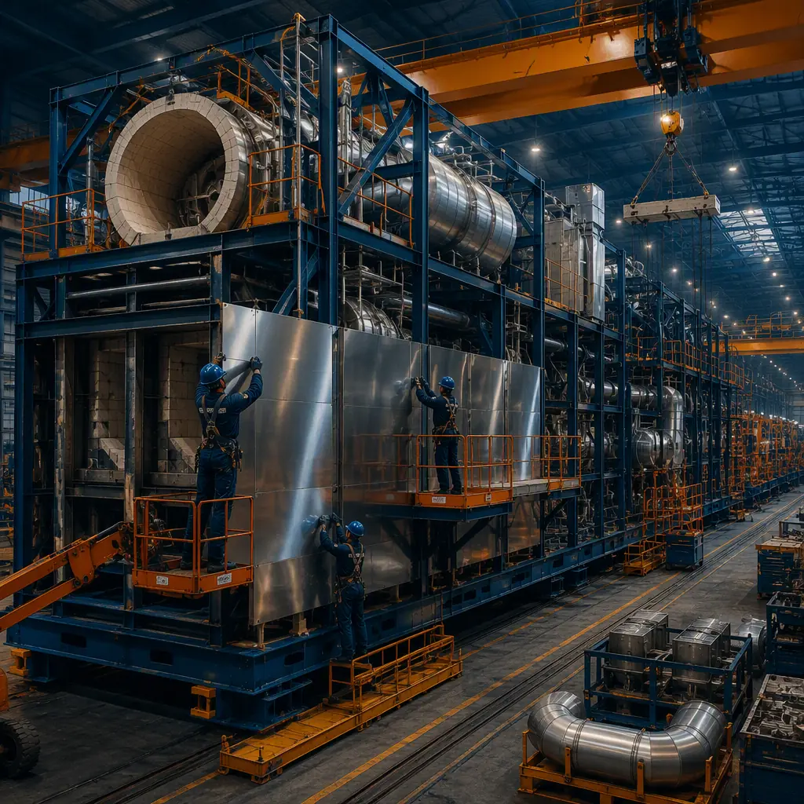

The global waste-to-energy (WTE) market is projected to grow from $35 billion in 2024 to $56 billion by 2031 — driven by landfill diversion mandates in the EU (Landfill Directive target: 10% of municipal waste to landfill by 2035), China's 14th Five-Year Plan adding over 100 new EFW plants, and US states including California and Washington imposing organics diversion requirements. Yet the facilities themselves take 4–6 years to deliver conventionally, and 35–45% of that schedule is consumed by the building program — the tipping hall, waste bunker enclosure, combustion hall, turbine hall, air pollution control (APC) building, and residue handling structures that house the process equipment. Modular prefabricated construction compresses the building program by manufacturing these structures as factory-built modules in parallel with boiler and turbine procurement and site civil works. A conventional 500 TPD (tons per day) EFW plant's building package takes 24–36 months; modular delivery compresses it to 14–20 months with a 20–25% building cost reduction — the same concurrent-production economics that drive heavy industrial modular construction in refining, petrochemical, and other process industries.

Why WTE Building Construction Is a Schedule and Cost Bottleneck
Waste-to-energy facilities combine the construction challenges of power plants with the environmental control requirements of process facilities — a combination that makes modular delivery particularly valuable:
- The building program runs in series with equipment delivery in conventional projects. A 500 TPD EFW plant's boiler, grate system, and turbine are manufactured over 18–24 months, but the buildings that house them are conventionally stick-built on site over the same window — and any building delay pushes back boiler installation and grid connection. Modular delivery manufactures the combustion hall, turbine hall, and APC building concurrently with boiler fabrication, so the structures are ready to receive equipment when it arrives. This parallel-production model is the same logic that accelerates modular gigafactory construction.
- Corrosion and process environments demand controlled fabrication. WTE buildings operate in corrosive environments — flue gas condensate, chloride-laden ash, and acid gases require stainless steel cladding, epoxy-coated structures, and sealed enclosures. Factory fabrication controls coating application, welding quality, and material selection in a way field construction cannot, extending asset life and reducing maintenance. The corrosion-protection discipline parallels what we document for modular coastal and flood-resistant construction.
- Environmental and safety compliance is inspection-intensive. WTE facilities must comply with EPA Clean Air Act MACT standards, state air permits, NFPA 850 for fire protection, and IBC seismic provisions. Factory-built modules can be fabricated to these standards with third-party inspection at the point of manufacture — fire-rated assemblies certified, coating systems documented, and penetrations sealed before shipment — compressing the field inspection and punch-list phase that conventionally adds 3–6 months. Fire safety design for prefabricated structures is covered in our guide to modular fire safety.
- Weather exposure constrains outdoor construction. Conventional WTE buildings require concrete, steel, and enclosure work that is weather-sensitive. Factory production is indoor and year-round, with modules shipped for a compressed setting sequence in any season — particularly valuable in northern climates where a 4–6 month winter construction hiatus is common.


What Gets Factory-Built — The WTE Module Package
The modular WTE building package divides into functional modules that can be manufactured, tested, and shipped independently:
Tipping Hall and Waste Bunker Enclosures
The tipping hall is where collection trucks discharge waste, and the waste bunker stores it before feeding. These structures require large clear spans (tipping halls typically 60–90 ft wide), vehicle access doors, ventilation and odor control (typically 6–12 air changes per hour with activated carbon or biofilter treatment), and fire protection including the NFPA-required water cannon systems for the bunker. Modular tipping halls arrive as factory-built steel modules with the enclosure, doors, ventilation ducting, and fire protection piping pre-installed — compressing a 6–9 month stick-built sequence to 3–4 months of factory production plus 2–3 weeks of site setting. The same large-span structural approach serves modular warehouse and distribution facilities.
Combustion and Turbine Halls
The combustion hall houses the grate system and boiler, with elevated operating floors, crane runway beams, and refractory-lined process enclosures. The turbine hall houses the steam turbine generator with its own crane and operating deck. These are the highest structures in the plant — combustion halls typically 80–120 ft tall with multiple operating levels — and modular delivery uses a combination of factory-built steel modules for the lower process levels and conventional structural steel for the tall upper sections, with module-based floors, walls, and roof systems. This hybrid approach compresses the critical path while retaining design flexibility for the tall process spaces. Factory steel fabrication quality is documented in our analysis of modular factory QC.
Air Pollution Control (APC) Buildings
Modern WTE plants route flue gas through APC trains — typically a combination of selective catalytic reduction (SCR), dry sorbent injection, baghouse filters, and activated carbon injection — to meet MACT emission limits for dioxins, mercury, SO2, NOx, and particulate matter. The APC building houses these systems and requires corrosion-resistant construction, high clearances for baghouse access, and precise equipment alignment. Factory-built APC modules arrive with equipment skids, ductwork, and platforms pre-installed — eliminating 4–6 months of field equipment installation and alignment work. The precision-enclosure approach parallels modular cleanroom and semiconductor facility construction.
Residue Handling and Material Recovery Buildings
Bottom ash and fly ash handling buildings, plus material recovery facilities (MRFs) that separate recyclables from the waste stream, complete the package. MRFs are a high-growth segment as jurisdictions combine recycling with EFW programs — they require sorting lines, conveyor systems, and baler installations that benefit from factory-integrated equipment mounting. Modular MRF buildings arrive with sorting platforms, conveyor supports, and utility systems pre-installed, compressing a 6–9 month build to 3–4 months. For the broader circular-economy context, see our guide to modular battery recycling facilities.

Cost Structure — Modular vs. Conventional WTE Building Delivery
| Cost Category | Conventional (500 TPD Plant) | Modular (500 TPD Plant) |
|---|---|---|
| Tipping hall & waste bunker enclosure | $8–12M | $6.5–10M (factory-built) |
| Combustion & turbine hall structures | $18–28M | $14–23M (hybrid modular) |
| APC building & equipment installation | $10–16M | $8–13M (factory-integrated) |
| Residue handling & MRF buildings | $6–9M | $4.5–7.5M |
| Field labor, temp facilities & weather risk | $6–10M | $2–3.5M |
| Total Building Package | $48–75M | $35–57M |
The 22–25% building cost reduction compounds with 8–16 months of earlier commissioning — on a 500 TPD plant generating 12–14 MW and earning $80–120 per ton in tipping fees plus electricity revenue of $45–65/MWh, each month of earlier operation is worth $1.5–2.5M in revenue and avoided interim landfill costs. For a full treatment of modular project economics, see our 2026 modular cost guide and our developer's ROI analysis.
Compliance — Codes Governing WTE Facilities
WTE facilities operate under a demanding environmental and safety regime: EPA Clean Air Act Section 129 MACT standards for large and small municipal waste combustors, state air permits with continuous emissions monitoring, NFPA 850 for fire protection of generating plants, IBC seismic and wind provisions, and local solid waste facility siting requirements. Modular delivery supports compliance by enabling factory-documented fabrication — fire-rated assemblies certified by third-party labs, coating systems applied and tested under controlled conditions, and equipment alignment completed before shipment — while the compressed schedule reduces the period during which a partially built plant exposes the owner to permitting risk. Environmental and regulatory strategy for modular projects is covered in our guide to permitting and zoning.
Is Modular Right for Your Waste-to-Energy Project?
Modular WTE building delivery delivers the strongest value for mid-scale plants (100–1,000 TPD), projects with firm commercial operation dates tied to power purchase agreements or tipping fee contracts, sites in weather-sensitive or remote regions, and owners building multiple facilities who can capture production-line repeatability. For very large plants above 1,500 TPD with massive concrete civil works, a hybrid approach — modular process buildings with conventional major civil structures — delivers most of the schedule and quality benefits. For owners advancing EFW, MRF, and circular-economy projects, modular delivery converts the building program from the project's longest schedule risk into a parallel production stream — consistent with the waste reduction and lean manufacturing advantages of prefabricated construction.